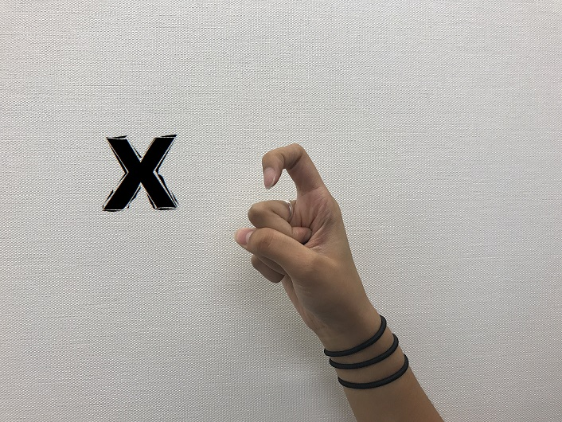
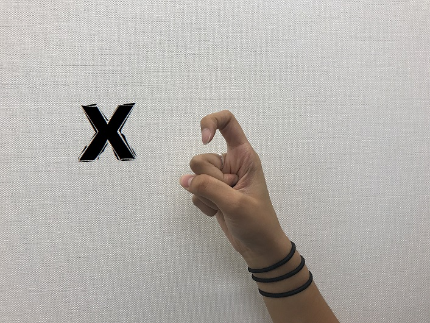

Hold your hand out to the side of your body, palm facing the other person to make sure that they can read your signs. It's tempting, but make sure not to bounce your hand forward for every letter! This can be very confusing for the person you are signing to. Don't know which hand to sign with? Use the one you use to write!
In fingerspelling, double letters get special treatment!
- When signing the letters E, L, or O twice in a row, slide your hand out to the side instead of signing the letter again. If you wanted to spell "well", you would sign W-E-L-slide.
- When signing the closed letters (M, N, S, T) raise your fingers slightly to indicate that you are signing them twice.
- When signing J or Z twice, use two fingers instead of one. For example, if you wanted to spell "pizza", you would sign P-I-two finger Z-A.
- For all of the other letters in the alphabet, you can indicate double letters by sliding to the side in an arc. "Apple" would be signed as A-P-arc-L-E
- These letters are: A, B, C, D, F, G, H, I, K, P, Q, R, U, V, W, X, and Y.
- Addresses
- Attention
- Borrow
- Community
- Feel
- Greece
- Irritate
- Looking
- Mission
- Office
- School
- Teddy
- Willow
 
